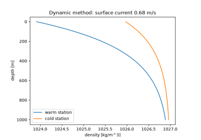
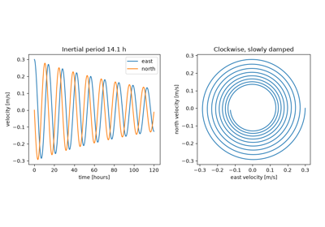
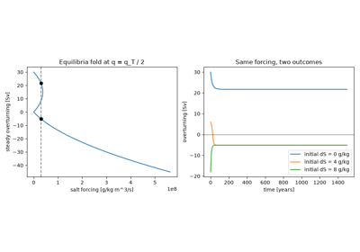

Breakthroughs in Oceanography#
Physical oceanography started with the tides and the waves that anyone on
a shore can see. Newton and Laplace turned the tides into a problem of
gravitation and then of dynamics, and Gerstner and Stokes solved the first
water waves. Measurement at sea came later: the Challenger soundings, then
Scandinavian hydrographers who turned temperature and salinity into density
and density into currents. The 20th century added rotation and wind, Ekman’s
spiral and Sverdrup’s and Stommel’s gyres, and then the slow interior
circulation set by heating, salt and mixing. This chronology traces the
results behind earthsciencekit.oceanography. Every example uses
deterministic synthetic inputs; none inverts real observations.
1687 – Newton’s Equilibrium Tide#
Isaac Newton explained the tides as the difference between the Moon’s
attraction on the near and far sides of the Earth, with a smaller share from
the Sun. An ocean that adjusted instantly would form two bulges whose
semidiurnal amplitude at the equator is (3/4) (M/E) (R/d)**3 R: about
27 cm for the Moon and 12 cm for the Sun. When the two line up they add
(spring tides), and when they are in quadrature they partly cancel (neap
tides).
Implementation: tidal_elevation(). The
example adds the lunar and solar constituents and checks the 14.77-day
spring-neap cycle.
References: I. Newton, Philosophiæ Naturalis Principia Mathematica (London, 1687), Book III, Propositions 24 and 36-37.
1776 – Laplace’s Tidal Equations#
Pierre-Simon Laplace wrote the equations of motion for a thin layer of ocean
on a rotating sphere, forced by the tidal potential. Long waves in that layer
travel at sqrt(g h). An ocean about 4 km deep moves them at about
200 m/s, less than half the speed of the Earth’s surface at the equator, so
the ocean cannot keep up with the equilibrium bulge. Real tides are the
ocean’s forced dynamic response.
Implementation: shallow_wave_speed().
The example finds the depth, about 22 km, at which the long-wave speed would
match the Earth’s rotation.
References: P.-S. Laplace, “Recherches sur plusieurs points du système du monde,” Mémoires de l’Académie royale des sciences de Paris (1775, published 1778): 75-182, and (1776, published 1779): 177-267.
1802 – Gerstner’s Trochoidal Wave#
Franz Josef von Gerstner found the first exact solution for waves of finite
height in deep water. Each particle moves on a circle whose radius decays as
exp(-k b) with its rest depth b, and the surface traces a trochoid
with sharp crests and flat troughs. The orbits close exactly, so Gerstner’s
wave carries no mass forward, and it is steepest when k a = 1, where the
crest becomes a cusp.
Implementation: gerstner_orbit_radius()
(new). The example draws the trochoid and the orbits and checks that the
mean surface lies k a**2 / 2 below the orbit centres.
References: F. J. Gerstner, “Theorie der Wellen,” Abhandlungen der Königlichen Böhmischen Gesellschaft der Wissenschaften (Prague, 1802).
1847 – Stokes’s Deep-Water Waves#
George Gabriel Stokes derived the dispersion relation
omega**2 = g k tanh(k h) for small waves and extended it to waves of
finite height. In deep water the crests travel at sqrt(g / k) and the
energy at half that speed, so the long waves from a distant storm arrive
first. In shallow water every wave travels at sqrt(g h).
Implementation: wave_angular_frequency(),
deep_wave_speed() and
deep_group_speed(). The example checks the
numerical group speed d omega / d k against the deep-water limit.
References: G. G. Stokes, “On the theory of oscillatory waves,” Transactions of the Cambridge Philosophical Society 8 (1847): 441-455.
1872 – The Challenger Soundings#
HMS Challenger left Portsmouth in December 1872 on a voyage of nearly four years that founded deep-sea oceanography. It sounded the depth, sampled the water and dredged the floor at 362 stations, and in 1875 measured 4475 fathoms (8184 m) in the Mariana Trench. At that depth the hydrostatic pressure exceeds 800 atmospheres.
Implementation: hydrostatic_pressure().
References: C. W. Thomson and J. Murray, Report on the Scientific Results of the Voyage of H.M.S. Challenger during the Years 1873-76: Narrative, vol. 1 (London: HMSO, 1885).
1901 – Knudsen’s Equation of State#
Martin Knudsen, with Carl Forch and Søren Sørensen, defined salinity and chlorinity and measured seawater density against temperature and salinity. Their Hydrographical Tables were the standard until 1980. Near a reference state the density is linear: warming makes water lighter and adding salt makes it heavier.
Implementation: linear_density(). The
example checks that isopycnals in the temperature-salinity plane have slope
alpha / beta.
References: M. Knudsen (ed.), Hydrographical Tables (Copenhagen: G. E. C. Gad; London: Williams & Norgate, 1901).
1903 – Sandström and Helland-Hansen’s Dynamic Method#
Johan Sandström and Bjørn Helland-Hansen applied Vilhelm Bjerknes’s circulation theorem to the sea. If the pressure is the same under two stations at a deep level of no motion, the lighter column must stand higher. The resulting slope of the sea surface balances a geostrophic current, so currents can be computed from temperature and salinity profiles alone.
Implementation: geostrophic_current(),
with linear_density() and
hydrostatic_pressure(). The example
checks that the two columns have equal pressure at the reference level.
References: J. W. Sandström and B. Helland-Hansen, “Über die Berechnung von Meeresströmungen,” Report on Norwegian Fishery and Marine Investigations 2, no. 4 (1903).

Sandström and Helland-Hansen’s dynamic method (1903)
1904 – Ekman’s Dead Water#
Fridtjof Nansen’s Fram lost most of its speed in waters where a thin layer of
meltwater lay over salty sea water. Ekman showed in laboratory tanks that the
ship was generating waves on the density jump below it. Such internal waves
travel at about sqrt(g' h) with the reduced gravity
g' = g d_rho / rho, ten or more times slower than surface waves on the
same layer.
Implementation: reduced_gravity() and
internal_wave_speed(). The example checks
that the ratio of internal to surface wave speed is sqrt(d_rho / rho).
References: V. W. Ekman, “On dead-water,” in The Norwegian North Polar Expedition 1893-1896: Scientific Results, ed. F. Nansen, vol. 5, no. 15 (Christiania, 1904).
1905 – Ekman’s Spiral#
Nansen also noticed that Arctic ice drifted 20 to 40 degrees to the right of the wind. Ekman showed that turbulent friction carries the wind stress downward while the Coriolis force turns each layer to the right. The current spirals and decays with depth, the surface current lies 45 degrees to the right of the wind, and the net transport is at right angles to it.
Implementation: ekman_spiral_velocity()
(new) and ekman_transport(). The example
checks that the integrated spiral equals the Ekman transport.
References: V. W. Ekman, “On the influence of the earth’s rotation on ocean-currents,” Arkiv för Matematik, Astronomi och Fysik 2, no. 11 (1905): 1-53.
1936 – Gustafson and Kullenberg’s Inertial Oscillations#
Torsten Gustafson and Börje Kullenberg recorded currents in the Baltic off
Gotland for days and found them turning clockwise with a period of about 14
hours. That is the inertial period 2 pi / f: once the wind has set the
water moving, nothing but the Coriolis force acts on it, and friction damps
the circles slowly.
Implementation: inertial_period() and
simulate_inertial_current(). The example
checks the simulated period against 2 pi / f at 57.8 N.
References: T. Gustafson and B. Kullenberg, “Untersuchungen von Trägheitsströmungen in der Ostsee,” Svenska Hydrografisk-Biologiska Kommissionens Skrifter, Ny Serie: Hydrografi 13 (1936).

Gustafson and Kullenberg’s inertial oscillations (1936)
1938 – Rossby’s Adjustment Radius#
Carl-Gustaf Rossby studied how a rotating fluid adjusts after a disturbance.
Gravity waves radiate the imbalance away, but rotation brings the fluid to
geostrophic balance over a distance equal to the wave speed divided by
f. In the stratified ocean the first baroclinic deformation radius is a
few tens of kilometres at mid-latitudes, the scale of ocean eddies.
Implementation: rossby_radius(). The
example compares it with a two-layer estimate from
internal_wave_speed().
References: C.-G. Rossby, “On the mutual adjustment of pressure and velocity distributions in certain simple current systems, II,” Journal of Marine Research 1 (1938): 239-263.
1947 – Sverdrup’s Balance#
Harald Sverdrup showed that away from boundaries the curl of the wind stress
is balanced by flow across latitude circles, where the Coriolis parameter
changes at the rate beta: V = curl(tau) / (rho beta). Under the
subtropical winds the whole interior drifts toward the equator, and the
transport must return in a boundary current.
Implementation: sverdrup_transport()
(new) and volume_transport(). The
example integrates the interior transport across a 6000 km basin and sizes
the boundary current that returns it.
References: H. U. Sverdrup, “Wind-driven currents in a baroclinic ocean; with application to the equatorial currents of the eastern Pacific,” Proceedings of the National Academy of Sciences 33 (1947): 318-326.
1948 – Stommel’s Western Intensification#
Henry Stommel solved the wind-driven circulation in a rectangular basin with
bottom friction. With uniform rotation the gyre is symmetric. When the
Coriolis parameter increases northward, the return flow crowds into a western
boundary layer of width friction / beta, which explains why the Gulf
Stream and the Kuroshio run along the western sides of their oceans.
Implementation: stommel_streamfunction()
(new). The tests check that its interior matches
sverdrup_transport().
References: H. Stommel, “The westward intensification of wind-driven ocean currents,” Transactions, American Geophysical Union 29 (1948): 202-206.
1961 – Stommel’s Two-Box Thermohaline Circulation#
Stommel linked a warm, salty box to a cold, fresh one. Temperature drives sinking in the cold box, and salinity opposes it. Because the flow carries the salt that sets its own strength, the steady states fold: for moderate freshwater forcing a strong thermal overturning and a weak reversed haline one are both stable. This is the root of the idea that the Atlantic overturning could switch state.
Implementation: thermohaline_forcing()
(new) and simulate_thermohaline_boxes()
(new). The example runs the boxes from three initial states under the
same forcing and checks that each ends on the equilibrium curve.
References: H. Stommel, “Thermohaline convection with two stable regimes of flow,” Tellus 13 (1961): 224-230.

Stommel’s two-box thermohaline circulation (1961)
1966 – Munk’s Abyssal Recipes#
Walter Munk modelled the deep Pacific as a balance between slow upwelling
w and downward turbulent mixing kappa, which gives an exponential
profile with scale height kappa / w. Fitting a scale of about 1 km with
an upwelling of about 1.2 cm per day needs a diffusivity of about
1e-4 m^2/s, ten times what was later measured in the open interior. The
missing mixing was found decades later over rough topography.
Implementation: abyssal_temperature()
(new) and buoyancy_frequency_squared().
The example recovers kappa / w from the slope of the log temperature
gradient.
References: W. H. Munk, “Abyssal recipes,” Deep-Sea Research 13 (1966): 707-730.
2010 – TEOS-10#
The Thermodynamic Equation of Seawater 2010 derives every property of seawater from a single Gibbs function, in Absolute Salinity and Conservative Temperature. Its density is nonlinear: it curves with temperature (cabbeling) and its thermal expansion grows with pressure (thermobaricity). Mixing two water masses of equal density therefore gives a denser mixture, which a linear equation of state cannot show.
Implementation: simplified_seawater_density()
(new), the simplified fit of Roquet et al. (2015), compared with
linear_density(). It is not the full
TEOS-10 polynomial.
References: IOC, SCOR and IAPSO, The International Thermodynamic Equation of Seawater – 2010: Calculation and Use of Thermodynamic Properties, Intergovernmental Oceanographic Commission, Manuals and Guides 56 (UNESCO, 2010). F. Roquet, G. Madec, L. Brodeau and J. Nycander, “Defining a simplified yet ‘realistic’ equation of state for seawater,” Journal of Physical Oceanography 45 (2015): 2564-2579.